|
|
| shelled snails text index | photo index |
| Phylum Mollusca > Class Gastropoda > Family Olividae |
| Tigerish
olive snail Oliva tigridella* Family Olividae updated Sep 2020 Where seen? This small bullet-shaped snail is sometimes seen on our Northern shores. A burrowing snail, it is more often seen above the ground at night or with the incoming tide. Features: 2-3.5cm. Shell thick heavy glossy, cylindrical bullet-shaped with tall conical spire. Shell pattern various from plain to dark speckles to large dark brown or black blotchy bars. The shell opening purplish brown.Body large beige with brownish spots all over. A long siphon sticks out of the notch in the shell. It does not have an operculum. |
|
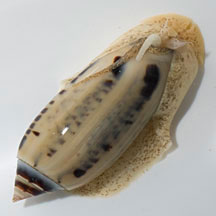 Changi, Apr 13 |
.
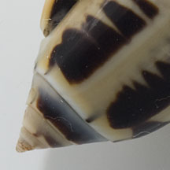 Tall conical spire. |
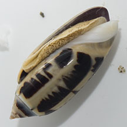 Shell opening purplish brown |
|
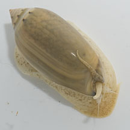 Changi, Apr 13 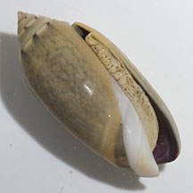 |
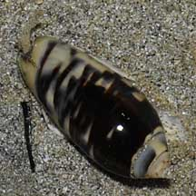 Changi, Jun 09 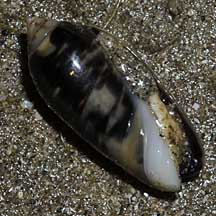 |
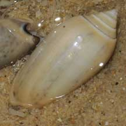 East Coast Park, Jun 09 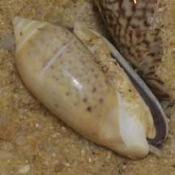 |
*Species are difficult to positively identify without close examination.
On this website, they are grouped by external features for convenience of display.
| Tigerish olive snails on Singapore shores |
On wildsingapore
flickr
|
| Other sightings on Singapore shores |
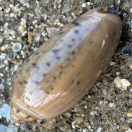 |
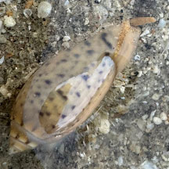 |
| Acknowledgements With grateful thanks to Tan Siong Kiat of the Raffles Museum of Biodiversity Research for identifying this snail. Links
References
|